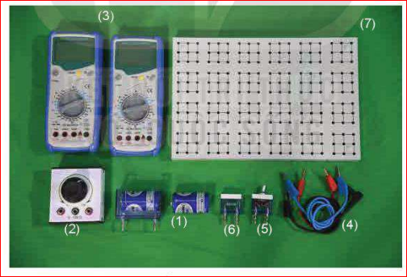
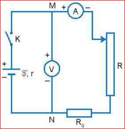
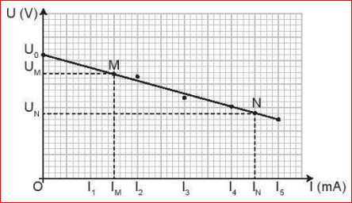

Chương IV - Dòng điện. Mạch điện

Hình 26.1. Bộ thí nghiệm đo suất điện động và điện trở trong của pin điện hoá
Hãy trả lời các câu hỏi sau:

Hình 26.2. Sơ đồ mạch điện thí nghiệm
Thực hiện tương tự như pin cũ để so sánh kết quả.
Bảng 26.1. Kết quả đo với pin cũ
| Số thứ tự | \(R \, (\Omega)\) | \(U \, (V)\) | \(I \, (mA)\) |
|---|---|---|---|
| 1 | ? | ? | ? |
| 2 | ? | ? | ? |
| 3 | ? | ? | ? |
| 4 | ? | ? | ? |
| 5 | ? | ? | ? |

Hình 26.3. Đồ thị quan hệ U và I
Bảng 26.2. Kết quả đo với pin mới
| Số thứ tự | \(R \, (\Omega)\) | \(U \, (V)\) | \(I \, (mA)\) |
|---|---|---|---|
| 1 | ? | ? | ? |
| 2 | ? | ? | ? |
| 3 | ? | ? | ? |
| 4 | ? | ? | ? |
| 5 | ? | ? | ? |
Pin lithium-ion là loại pin được dùng phổ biến trong điện thoại di động, máy tính xách tay... Công nghệ xe điện đang phát triển tại Việt Nam phần lớn sử dụng loại pin này. Mỗi pin có suất điện động khoảng 3,2 V được ghép thành bộ pin có suất điện động 48 V, 60 V, 72 V để sử dụng.
Giải thích tại sao trong khi tiến hành thí nghiệm không nên đóng mạch điện trong thời gian dài?
Câu 1: Trong thí nghiệm này, suất điện động của pin được xác định bằng cách nào trên đồ thị \(U = f(I)\)?
Câu 2: Công thức tính điện trở trong \(r\) dựa trên đồ thị là:
Câu 3: Mục đích của điện trở \(R_0\) trong sơ đồ mạch điện là gì?
Câu 4: Khi pin bị "chai" (cũ), đại lượng nào sau đây thường thay đổi đáng kể nhất?
Câu 5: Đơn vị của suất điện động và điện trở trong lần lượt là: